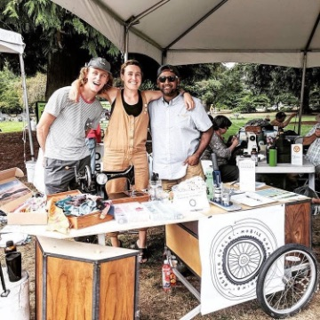
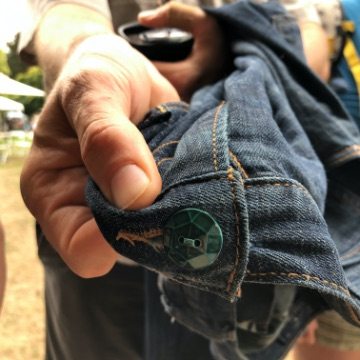
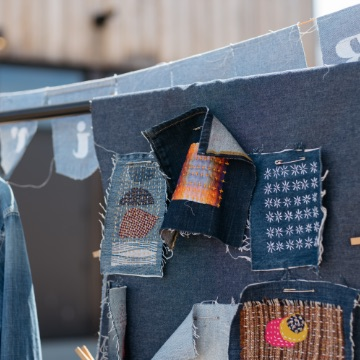
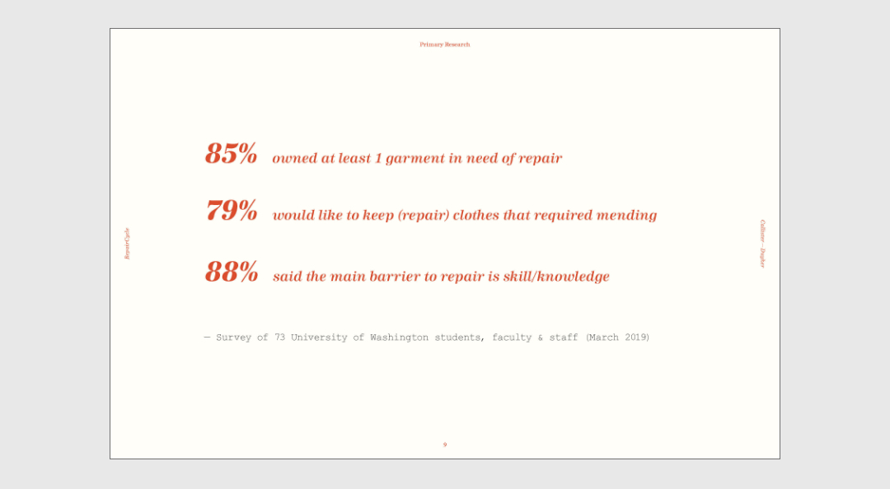
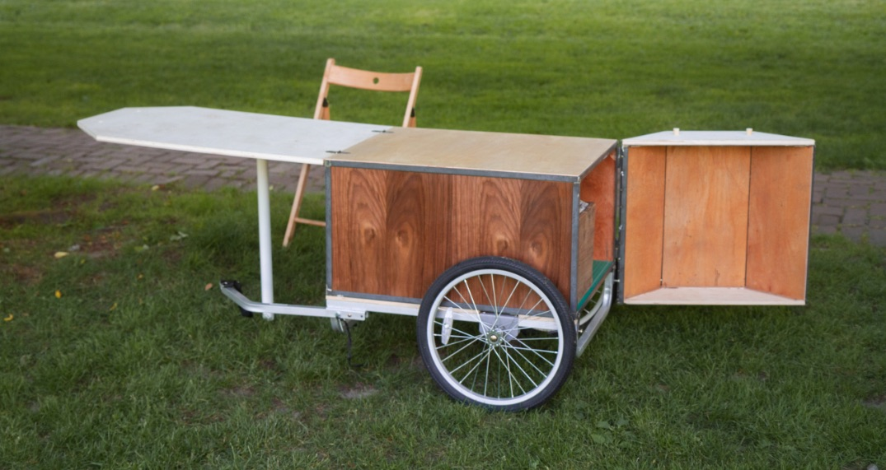
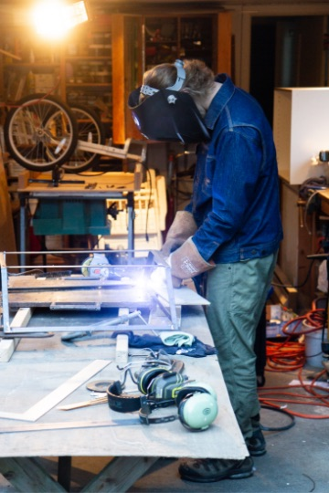
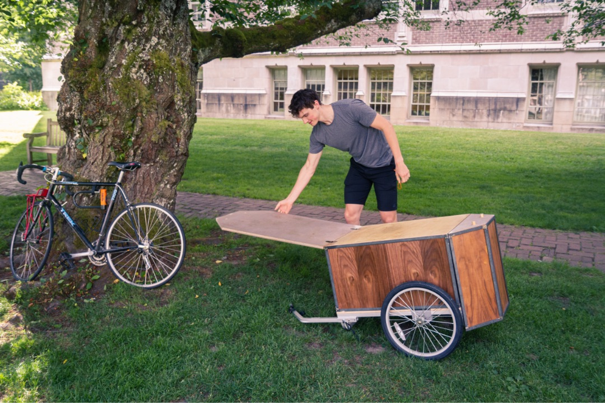

/ Project
The RepairCycle
Our relationship with textiles is out of balance. How can we catalyze change towards a culture of repair?
The average life cycle for an article of clothing (in the U.S.) is less than one year. With no straightforward way to recycle textiles, this disposable mindset is creating massive solid waste (about 1 garbage truck every second, or 92 million tons dumped into landfills annually). Striking a balance means disrupting this wasteful cycle with thoughtfully designed experiences that inspire and empower us to keep and enjoy clothing longer.
The Repair Cycle is a mobile, on-the-spot mending service that powers the circular economy through the universal aspect of clothing.

The RepairCycle cart on the University of Washington campus.
Overview
Team
Co-founders
Coreen Calister
David Duyker
Contributers
Sofia Cababa Wood
Logan Windish
Timeline
Spring 2019 - present
The RepairCycle is ongoing. We participated in CHOMP, Seattle Design Fest, University of Washington Sustainability Fair, and the University of Washington Senior Design Show in 2019.
We are currently exploring how we can continue our work in the midst of the current global challenges!
Funding
University of Washington Sustainability Fund
Macktez Summer Stipend
Logan Windish pedals around with RepairCycles trailer.
What we do
Events
Our focus is creating a wonderful new way to “re-experience” our clothing through interactive events and on the spot mending services. Each event is unique and adaptive but they all are pop-ups and educate participants on the systemic issues with the garment industry and what can be done as an individual and community to change.
On-the-spot mending
All of our events to date have offered free on the spot mending. Our biggest repair event so far was Seattle Design Fest! Tons of fun and being near downtown Seattle we got to mend for a wide variety of people.
Education
Everyone who comes and interacts with us will be able to learn regardless of their available time or resources. When appropriate we provide sewing kits (with instructions for simple tasks) free of charge as well as classes. Our favorite to date was taught by Wren-bird mends on sashiko style mending.
Development
Research
This image was pulled from our slide deck for grant applications and the data are from our digital survey
Initial Survey
Digital survey
We distributed two digital surveys to gather information about general knowledge about clothing repair and personal garment practices. We distributed separate surveys to students and non-students. This was to give particular insight on how we might effect change on our own campus. We were thrilled to have over 70 respondents and many great stories about clothing.
Industry Interviews
We conducted some free flowing interviews with people that repair and alter clothing professionally. This was to give us an idea about the current state of the industry and how we might fit into it.
Insights
General
A significant barrier to entry for participation in repairs and a more circular clothing economy is knowledge.
Repair requires investment. Either you spend time and money to get something repaired or you spend even more time to do it yourself.
Cart Function
Interest in learning new skills is very high
Our survey showed that most people currently have a garment in need of repair
We need to meet people where they are
The Cart
We knew we needed to be mobile, flexible, and engaging. An eye catching bike trailer would meet our needs perfectly.
A bike trailer allows us to go almost anywhere including inside buildings and parks. Everything we need to repair clothes and educate participants can be pulled behind our bikes. By predominantly using human power in our sewing and transportation we are able to make a deeper commitment to our values of sustainability and accessibility.
Ideation + Iteration
Reference
Mood and reference boards focused on building techniques, materials, and utility.
Collaboration
All the components of the RepairCycle inform each other from the events to the trailer. Collaboration during all phases was key to integrating all the aspects of the cart.
Sketching
Sketching helped visualize how we would fold and shape the cart into a useful workspace that could support the multi functionality that we would need for our events. Enough space to sew, teach, and engage with participants.
Prototyping
Proportions
At this stage we decided that we would build off of a children’s trailer base that we bought from craigslist. Before starting on modeling we wanted to get a good sense of scale with some lo-fi prototyping.
Modeling
Utility
Through modeling in solid works I was able to virtually prototype how the cart would come together. Watching each of the folds and hinge I noted the weak points of the multi step setup process. I re-enforced the desk hinge and added pegs to lock the whole thing together.
CMF
Through critique we explored how we might accent the trailer to catch eyes at events through materials. Should we use color? What about transparent sides? Ultimately we decided to go with salvaged wood to further support our mission of sustainability and circular product lifecycles. A neutral look would allow us to be adaptable and we haven’t had any issues with not being eye catching enough!
Build
For the build I got to learn basic welding to fabricate the frame for the cart. We had to get a particularly tough hinge professionally welded after our first event but 99% of the construction was done by yours truly. The welded frame created a hinged cabinet that we could put supplies in and it all bolted onto the children’s trailer base that could be towed by my bike.
In Action
This is only the first generation of the repair cycle. The cart, like our service, will evolve as we learn more. Each event provides new insights and we believe sky is the limit!
Logan models the setup process for the cart.
Moving Forward
How can we increase our reach through using digital tools"
What are the ways we can support the repair economy in the midst of this economic crisis?
How can the repair cycle become more intersectional in its mission?
Expression and empowerment through clothing repair has the potential to be a strong pillar to for economically depressed victims of global and local catastrophy. We want to build in our communities resiliance.